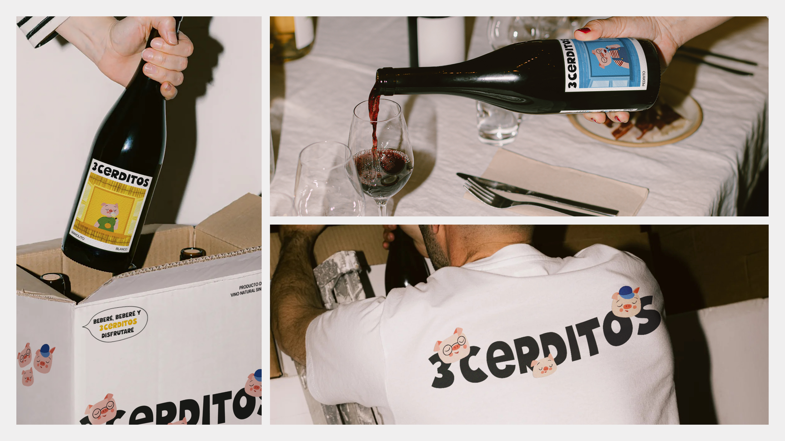
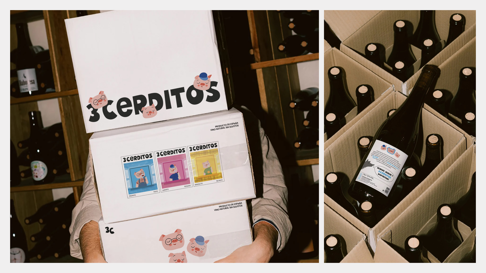
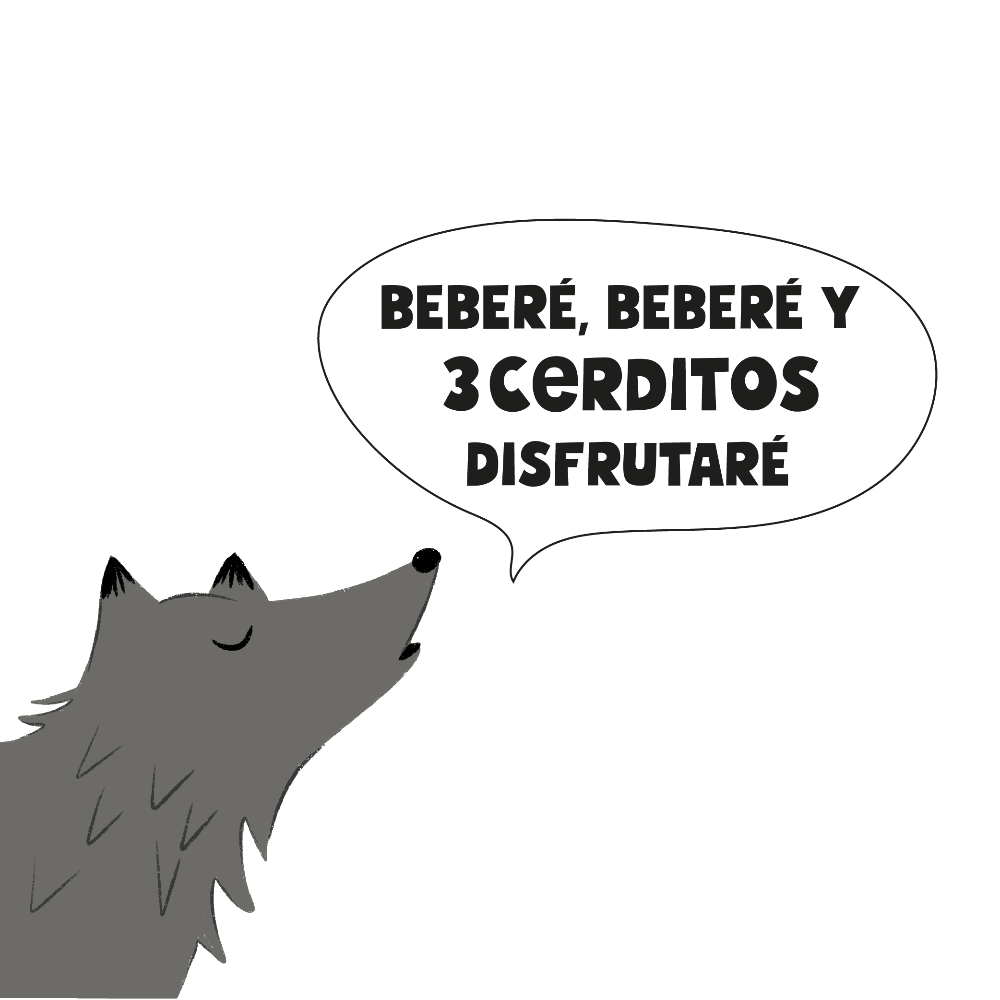
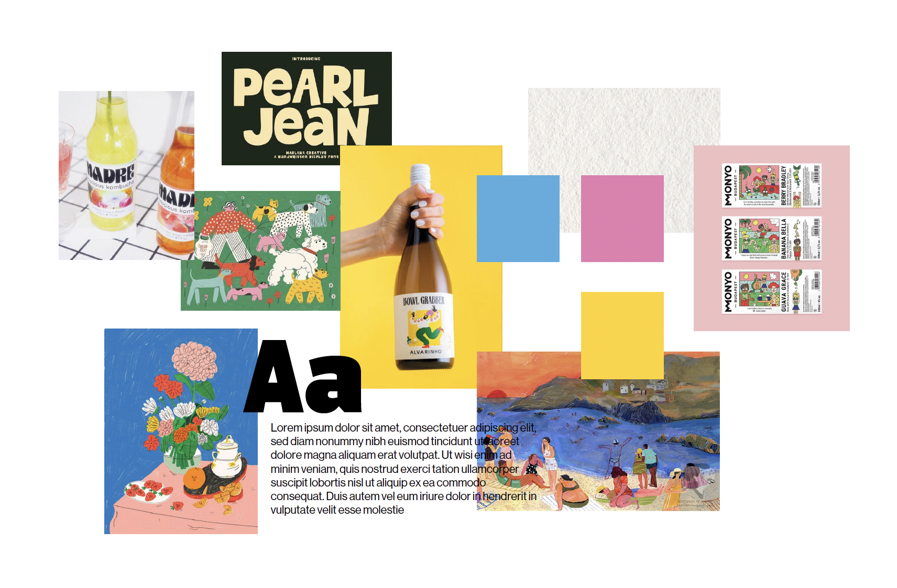
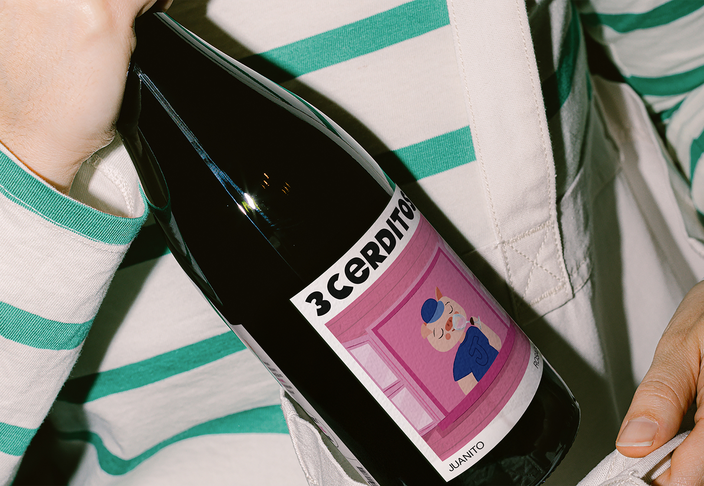
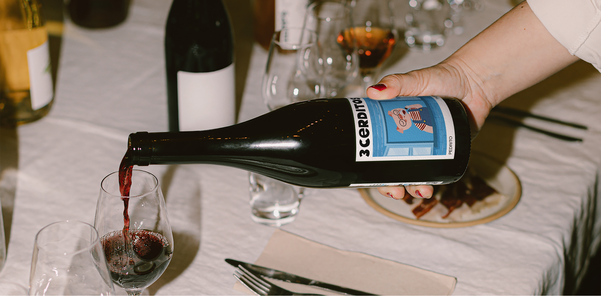

3CERDITOS
Project Overview
For this project, I developed 3 Cerditos, a fictional wine brand created as part of a design exploration. The concept, branding, and packaging were entirely crafted by me, with the goal of imagining a wine that breaks away from traditional formality and speaks directly to a young, urban audience through humor, storytelling, and a playful visual identity.
The challenge was to build a brand world from scratch—starting with naming and narrative—while designing a cohesive system that felt approachable, memorable, and market-ready.

Design Process
01. Naming
The name 3 Cerditos was inspired by the classic tale of \"The Three Little Pigs.\" This familiar reference adds a playful twist and makes the brand instantly recognizable. Each \"cerdito\" represents a different wine (red, rosé, and white), allowing for character-based storytelling that reinforces the brand's casual, fun-loving personality.
02. Moodboard & Concept Development
To define the creative direction, I built a moodboard focused on warmth, humor, and rustic charm. The goal was to infuse the brand with personality—something vibrant, nostalgic, and a little irreverent—while still feeling connected to nature and quality wine production.
03. Creative Copywriting
The tagline \"Beberé, beberé y 3 Cerditos disfrutaré\" is a playful adaptation of the fairy tale phrase \"Soplaré, soplaré y tu casa derribaré.\" This catchy, rhyming slogan was designed to evoke familiarity and make the brand voice memorable, light-hearted, and inviting.
04. Visual Identity & Packaging
Each label tells a mini-story of its respective pig character: Pedrito (red), Juanito (rosé), and Manolito (white). The designs combine whimsical illustration with bold color palettes, pairing each wine's personality with its visual expression. The back labels provide narrative context, linking the wines to the Natural Park of La Mata, adding a fictional terroir-based storytelling element.




